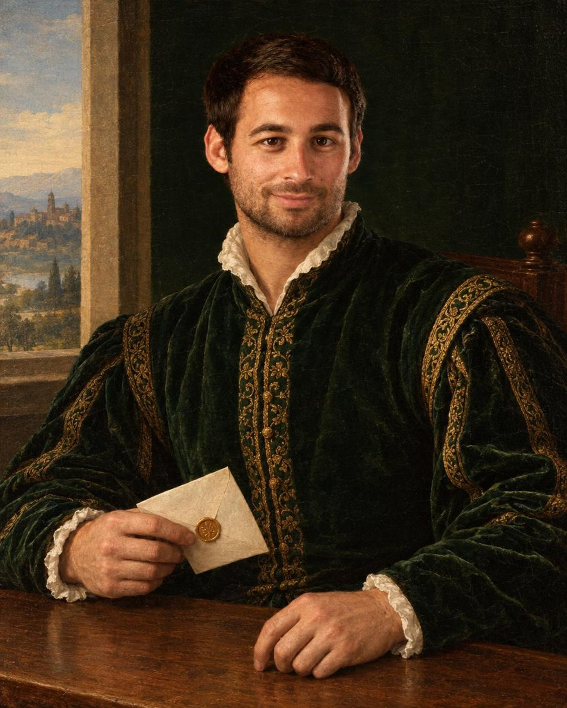

Before Atrios, I spent 10 years as the founder and CEO of Feat. During that time, I met thousands of founders, business leaders, and investors. Whenever I met someone new, I would ask:
Then I'd try to introduce them to three people.
Part of this came from a genuine desire to help. But if I'm being completely honest, I also wanted people to like me. And I figured the best way to build a strong network was to be ridiculously helpful to everyone I met.
Turns out, it worked. Some of those introductions led to million-dollar deals. Others helped build billion-dollar companies.
But I didn't want to be the guy who just forwarded an email and said, "You two should meet." Before making an introduction, I would ask one side:
I wanted every introduction to feel amazing for both people. I wanted my friend to think I was a legend for hooking them up. And I wanted the company to think I was a legend for bringing them a great customer.
Then someone offered to pay me. A friend told me:
I was confused.
I was already getting rewarded. He was giving my friends incredible deals, so they liked me more. I was bringing him new customers, so he liked me more. And, as we've established, being liked was more valuable to me than money. (Still kind of is. Haven't fully worked through that one yet.)
Then he explained the economics of his sales organization. He showed me what his company paid salespeople, marketers, and other channels to acquire customers. If I had been on his sales team, he said, they would have paid me millions of dollars for the business my introductions created.
His company had become a billion-dollar business, and investors didn't want to risk losing the person responsible for so many valuable introductions.
He insisted. So I accepted.
I started using the same model with other companies. My rule was simple:
Since then, I've personally made close to $1 million from introductions.
But something more interesting started happening. Companies began offering better and better deals because they wanted access to trusted relationships. Then I started showing friends how they could do the same thing.
Before I had even thought about "starting a company," dozens of my friends were earning thousands of dollars a month by connecting people they cared about with companies offering them something genuinely valuable.
I became obsessed with creating the most value for my network, so I started building tools to help me understand who in my network I should introduce, and why.
Then I started asking my friends to share their networks with me so I could tap into theirs as well.
Every person I met, I started asking them to look at their network to see who was valuable for me, and showed them my network to see who was valuable for them. Everything started growing exponentially.
So I created a group chat for us. I called it: The Tastemakers.
Inside the group, we shared screenshots of the introductions we made. Not screenshots of how much money we earned. Screenshots of how happy our friends were.
Friends getting access to opportunities they didn't know existed. Companies meeting customers they never would have reached through cold email. Tastemakers getting rewarded for creating value they had previously created for free.
Then people started asking:
The group chat grew. Then it grew again. Eventually, it became obvious: this was becoming a company.
My first name for the company was TaylorsOffers.com. (See what I did there?) People laughed. Fair enough.
I wanted the company to become something much bigger than me, so we landed on a new name: Atrios.
A Tastemaker connects two previously separate dots, turning them into a triangle:
An equilateral triangle. All three sides benefit. All three sides become stronger because the connection happened. That is what Atrios is built to create.
We're beginning to open the Tastemaker community to more people. Honestly, that scares me a little.
I have personal relationships with our first 1,000 Tastemakers. Part of me wants to know every future Tastemaker personally too. But I know that instinct would prevent thousands, eventually millions, of people from creating and receiving the value I've seen firsthand.
I've watched Tastemakers change their lives through Atrios. I've also watched them change the lives of the people they introduce. I can't let my desire to personally meet everyone prevent other people from experiencing that.
So we're opening the community carefully. We remain selective because trust is the entire foundation of Atrios. But if you believe you can help the people in your network discover valuable companies, opportunities, and relationships, we'd love for you to apply. I, or someone on our team, will personally review it.
Apply to be a TastemakerEven if you never become an Atrios Tastemaker, I hope you do something today:
Text the old college friend you haven't spoken to in years. Reach out to the founder you've been meaning to reconnect with. Ask someone, "Is there anything I can help you with?" Then think about the people you know and make an introduction.